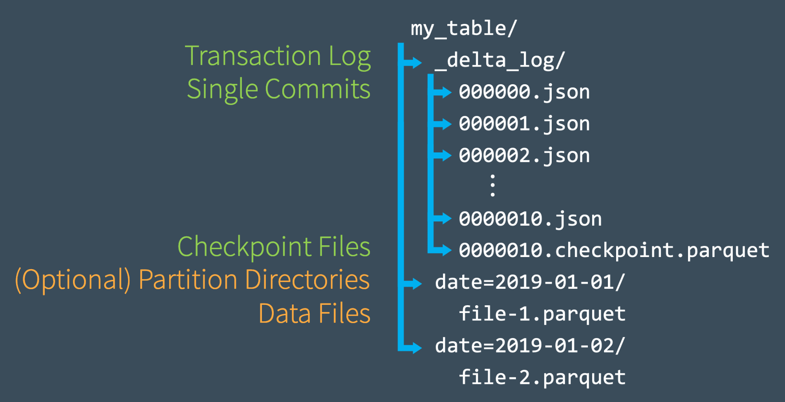
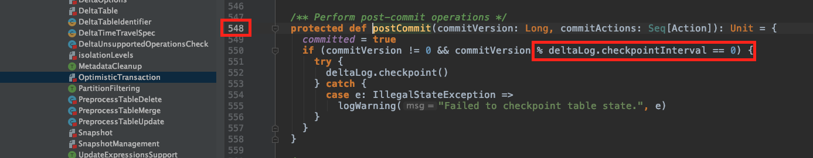
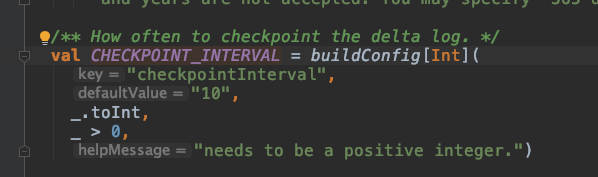

Delta Lake essential Fundamentals: Part 3 - compaction and checkpoint
Let’s understand what are Delta Lake compact and checkpoint and why they are important.
Checkpoint
There are two known checkpoints mechanism in Apache Spark that can confuse us with DeltaLake checkpoint, so let’s understand them and how they differ from each other:
Spark RDD Checkpoint
Checkpoint in Spark RDD is a mechanism to persist current RDD to a file in a dedicated checkpoint directory while all references to its parent RDDs are removed. This operation, by default, breaks data lineage when used without auditing.
Structured Streaming Checkpoint
Structured Streaming is a scalable and fault-tolerant stream processing built on Spark SQL engine. The queries are processed using a micro-batch processing engine as a series of small-batch jobs. Structured Streaming enables exactly once fault-tolerant guarantees through checkpoint and writing ahead logs. The streaming engine record the offset range of the data that is being processed in each trigger. Hence if a trigger failed, we have the exact range of processed data there and can recover from it.
DeltaLake checkpoint
On each Delta Table state compute, Delta reads the JSON files discussed in Delta Lake essential Fundamentals: Part 2 - The DeltaLog. To avoid reading all the files and executing a long compute, every 10 commit files are being aggregated to a checkpoint file of type parquet. These checkpoint files save the entire state of the table at a point in time. It allows the Spark engine to avoid reprocessing thousands of tiny JSON files. This mechanism ensures that for computing table state, Spark only needs to read the latest parquet checkpoint file with up to 10 JSON files, it makes the computation faster and efficient.
Checkout the visualization of Delta Checkpoint file from Databricks site:

checkpoint files can be a one file for a specific table version or multiple files, it depends on what it contains.
In one part, table version(n) 10 the file name will be of the structure n.checkpoint.parquet:
00000000000000000010.checkpoint.parquet
In multi-part, table version(n) 10 the files name will be of a structure that Fragment o of p: n.checkpoint.o.p.parquet:
00000000000000000010.checkpoint.0000000001.0000000003.parquet
00000000000000000010.checkpoint.0000000002.0000000003.parquet
00000000000000000010.checkpoint.0000000003.0000000003.parquet
Snapshot of the function that is in charge of the writing the checkpoint files, the modulo operation is in charge of the checkpointInterval which can be updated in DeltaConfig.


Delta Lake configuration can be set as a Spark Configuration property, or Hadoop configuration depends on the LogStore, the cloud used, etc.
I hope this provides more clarity into the differences between the three checkpoint mechanisms and their usage.
Next, let’s examine the compact files mechanism Delta recommends as part of its best practices:
Delta Lake Compact files
The same way Delta Lake handles its own small JSON DeltaLog files is creating, we as developers need to take care of the small files we might introduce to the system when adding data in small batches. Small batches can happen when we have Streaming workloads or continuous small batches of data ingesting without compacting it.
Small files can hurt the efficiency of table reads, and it can also affect the performance of the file system itself. Ideally, a large number of small files should be rewritten into a smaller number of larger files regularly. This is known as compaction.
We can compact a table by repartitioning it to a smaller number of files.
Delta Lake also introduces the ability to set the dataChange field false; this indicates that the operation did not change the data, only rearranges the data layout. But be careful with it, since if you are introducing a data change that is not only a layout, it can corrupt the data in the table.
For exploring and learning about Delta, you are invited in joining me by watching the videos. Let me know if that is useful for you, and we can schedule twitch as well.
What’s next?
Next, scenarios and use cases for DeltaLake!
As always, I would love to get your comments and feedback on Adi Polak 🐦.
If you would like to get monthly updates, consider subscribing.